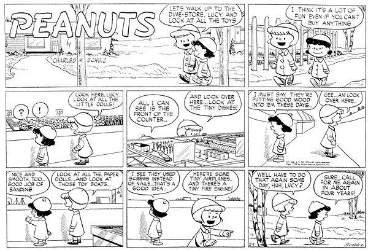
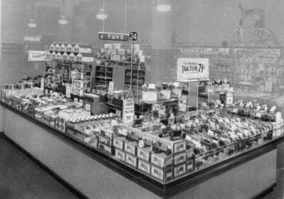

© 2019, 2026

Alas Peanuts.com official archive
doesn’t include 1953 (yet?) now has
Upsell blocking content, and didn’t reply when i
asked if they knew when it was run, but I found
it on a blog … which seems to have been hit by a takedown,
but it’s also now on the Fandom Wiki 1953-02-01.
There seems to be a literary debate as to whether Lucy is being sarcastic/ironic or truly appreciative of the carpentry! With hindsight of the Lucy that is-to-be, obviously sarcastic/ironic, and I for one think author’s intent is plainly dislosed in Lucy’s disgruntled parthian/parting-shot punch-line.
Obviously, neither Ruthie nor I read this in the newspaper in 1953,
but only in Pappa’s excellent
collection.
But it’s the foundation for a family watch-word / catch-phrase from our
1960s-70s vacation touring.
” Hey Ruthie, did
<whatever museum we're in>use Nails or Screws ? ”
– our way of acknowledging height-ism of the architecture within arms reach.
I am barely old enough to have seen the last few 5-and-dime / Woolworths / W.T.Grants with wooden bins for loose products arrayed as counters in islands on the floor, before advent of excess packaging and hang-hooks & shelves in aisles. (The modern Dollar store is the dime-store’s indirect descendant as a price-point variety store today, but still with excess packaging and hooks-and-aisles. Yeah, a nickel is now a dollar.)

UPDATES
Because of a literary discussion of Peanuts, I discovered the above link’s photo-link expired (takedown notice?) (discussion still there).
Permanent ? syndicate link (login now required)
Wiki Feb 1953 Sunday in Color!
Ruthie was featured by family friend Dan Kennedy’s article in NUMagazine (which pushed Gov Dukakis off the cover!), which became a chapter in his book. (Dan’s Book & Essays ⇒ “A Most Congenial Activist” )